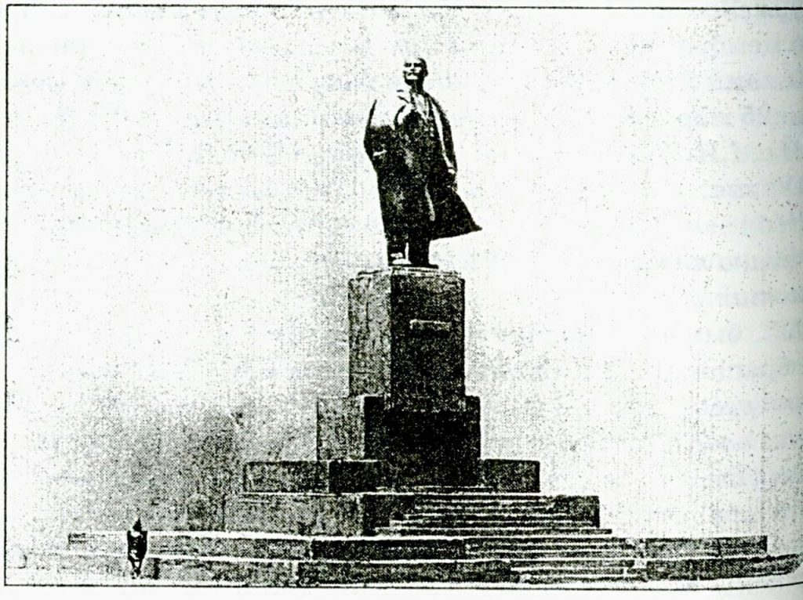
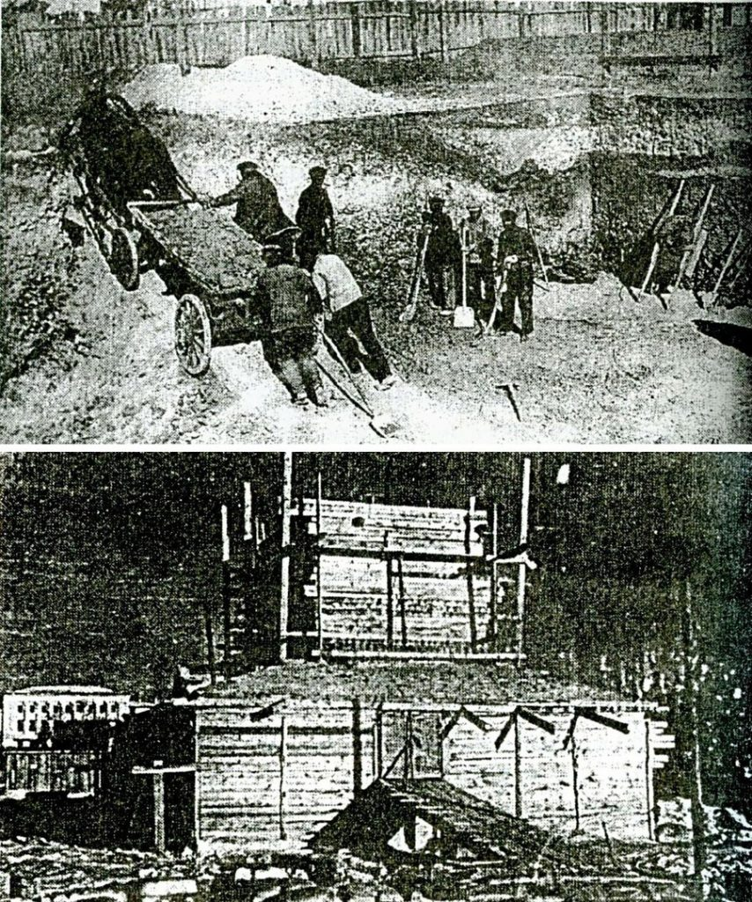

На апрель, по понятной причине, в Ульяновске приходится ряд событий, связанных с открытием памятников и других значимых объектов. А потому несколько посвященных этому сюжетов начнем несколько раньше. 22 апреля 1940 года был открыт памятник В.И.Ленину. Планы по его сооружению появились еще в 1920-ые гг., рассматривался целый ряд проектов. Подробный материал об этом был год назад, 22 апреля 2017 года. Сегодня же речь пойдет об открытии существующего памятника. Многие туристы задаются вопросом, в каком городе установлен памятник букве «ё» и почему именно там?  Итак, в 1939 г. принято окончательное решение о сооружении монумента В.И.Ленину на его родине. Разработка проекта еще ранее была поручена заслуженному деятелю искусств скульптору М.Г.Манизеру, известному в стране монументалисту. Эскиз подобного памятника был создан Матвеем Генриховичем еще в 1924 году – Ленин в ветреную погоду, в развевающемся накинутом на плечи пальто. Этот мотив был развит в окончательном варианте скульптуры. Проект пьедестала разработал главный архитектор «Ленгипрогора» Владимир Александрович Витман. Сначала М.Г.Манизер предлагал установить памятник на пересечении улиц К.Маркса (Гончарова) и Ленина, на месте снесенного Вознесенского собора, как и предусматривалось большинством предыдущих проектов. Он полагал, что памятник затеряется на обширной пустой площади. Позже, согласившись на этот вариант, скульптор считал необходимым возвести на площади несколько больших зданий, озеленить ее. Эти предложения были учтены в генплане Ульяновска, разрабатывавшемся еще до войны. Позже идея возведения на площади Ленина нескольких монументальных зданий нашла отражение в генеральном плане 1946 года, о чем речь шла недавно. Эти планы были реализованы лишь частично, строительством здания обкома. Но вернемся к памятнику. В апреле 1939 года был утвержден его эскизный проект. В сентябре началось рытье котлована под фундамент размером 13 на 11 и глубиной 3 метра – вручную, грунт вывозили на телегах. 8-метровый постамент был облицован карельским гранитом. 13 апреля 1940 года в Ульяновск доставили 6,5-метровую фигуру Ленина, отлитую на Ленинградском заводе «Монумент-скульптура». Через 2 дня ее привезли на место, затем установили на постамент и закрепили стальным стержнем и метровыми болтами. К знаменательному событию площадь 1 Мая была переименована в площадь Ленина. На открытие памятника приехал его автор М.Г.Манизер. 22 апреля 1940 года газета «Пролетарский путь» опубликовала интервью со скульптором. *** МОНУМЕНТАЛЬНЫЙ ОБРАЗ ВОЖДЯ Автор нового памятника В.И.Ленину, заслуженный деятель искусств М.Г.Манизер в беседе с нашим корреспондентом сообщил следующее: – Памятник В.И.Ленину, открываемый в 70-летие со дня рождения вождя в г.Ульяновске, – одна из крупнейших моих работ. Мысль о создании монументального образа Владимира Ильича занимала уже много лет. Идти не по линии наименьшего сопротивления, не повторяя той или иной фотографии…, а постараться понять внутреннюю сущность Ленина – вождя, учителя человека – вот что я ставил своей задачей…. Это Ленин в дни Октября…, проницательно и бодро смотрящий вдаль – в будущее человечества; Ленин, окруженный бурной стихией, ветром, рвущим с его плеч накинутое пальто… На вопрос, как т.Манизер смотрит на дальнейшее архитектурное оформление площади имени Ленина, он ответил: – Мне известно, что по существующему в Гипрогоре генеральному проекту планировки Ульяновска, площадь… приобретет другой вид… *** В том же номере газета сообщала о подготовке к празднику, рассматривавшемуся как событие общесоюзного масштаба. УЧАСТИЕ В СТРОИТЕЛЬСТВЕ ПАМЯТНИКА. Население города живо интересовалось ходом строительства памятника. С началом установки фигуры на пьедестал площадь постоянно полна народа. Но трудящиеся города не только интересовались ходом строительства, но и помогали строить памятник. На строительстве работали лучшие люди пристани и железнодорожного узла. Кузнец т.Евграфов, работавший на установке фигуры, показал хорошее качество работы. МИТИНГ БУДЕТ ПЕРЕДАВАТЬСЯ ПО ВСЕЙ СТРАНЕ. Митинг, посвященный открытию памятника В.И.Ленину, будет передаваться по радио через станцию имени Коминтерна по всей стране. Заканчиваются подготовительные работы к трансляции. КИНОСЪЕМКИ ОТКРЫТИЯ ПАМЯТНИКА. В Ульяновск приехала бригада Куйбышевской студии кинохроники. …Бригада сделает 22 апреля для Всесоюзного и межобластного киножурналов киносъемки празднования, посвященного открытию памятника В.И.Ленину. Будут засняты момент открытия, митинг и демонстрация. ТОРГОВЛЯ НА ПЛОЩАДИ. В день открытия памятника 22 апреля для обслуживания трудящихся, во время демонстрации…, областная база облпищепрома и трест столовых организуют на площади торговлю. Будут продаваться прохладительные напитки и другие товары. 22 апреля будут открыты все киоски на Новом Венце. *** Первый лист газеты украшала громадная, во всю высоту страницы, фотография – еще не памятника, а его модели. Подробный отчет о торжественном открытии памятника Ленину «Пролетарский путь» поместил на следующий день, 23 апреля. Событию был посвящен практически весь номер. Газета опубликовала текст всех выступлений, прозвучавших на митинге. Само же мероприятие описывалось в большой передовице – не сухо-официальной, а весьма красочной. *** НАРОДНОЕ ТОРЖЕСТВО Вчерашний праздник – это всеобъемлющее, многотысячное торжество трудящихся Ульяновска. Ощущение необычайно большой радости, приподнятого настроения нес в себе каждый, кто вышел принять участие в празднике открытия памятника великому Ленину на его родине. Как многочисленные полноводные реки стекаются к морю, так плотно сомкнутые колонны ульяновцев 22 апреля с утра полились на просторную площадь имени Ленина. В 10 часов утра были тесно заполнены все центральные улицы. Широкое течение праздничных колонн, более часа продолжавшееся на улице К.Маркса [Гончарова], к 12 часам – началу митинга – мощным прибоем хлынуло на площадь. Проснувшаяся от грома оркестров и бодрых песен демонстрантов, она вздрогнула и ожила. Скоро это была уже не серая и притихшая земля, а бурное людское море с бесчисленными пурпурными островками бархата, кумача и шелка. Волны не прекращающегося многоголосого гула несли на своих гребнях задорную советскую песню. Он – огромный бронзовый монумент… – был еще закрыт от тысяч взоров, обращенных к нему. Темное покрывало, окутывающее всю фигуру и часть пьедестала, широкими волнами колыхалось по ветру, создавая иллюзию жизни в молчаливом камне и бронзе. … Какое-то большое, торжественное возбуждение, соединенное с острым любопытством, росло в колоннах собравшихся. Даже мелочи… сейчас казались чем-то значительным. Мягкие гудки подкатывающих авто; фоторепортеры, щелкающие затворами; группы людей, забравшихся, чтобы лучше видеть, на деревья и крыши домов – все волновало и радовало. А приток демонстрантов все продолжался. Вот уже площадь, казалось, несоразмерно большая для маленького Ульяновска – тесна. Строгие ряды воинских колонн придвинулись совсем близко к памятнику. А позади – пестрый, цветистый строй учащихся, рабочих, интеллигенции и представителей от колхозной общественности. Около 50 тысяч трудящихся родины Ленина пришли в этот день на площадь, чтобы стать свидетелями и участниками исторического события – открытия памятника великому Ленину. Близится торжественная минута. Трибуна справа от памятника и помост для гостей – слева от него уже заполнены людьми. На гранитных ступенях пьедестала и на линейке перед ним, как изваяния, застыли знаменосцы. Легко полощутся по ветру боевые знамена. Не умолкая, звенят оркестры. Ровно 12 часов дня. Черные радиорепродукторы, молчавшие до сих пор, со всех концов площади оглашают начало праздника. «Внимание, слушайте, говорит город Ульяновск…». Это родина Ильича обращается через микрофон ко всем радиослушателям Советского Союза. «…Сейчас начнется митинг, посвященный открытию памятника гению пролетарской революции Владимиру Ильичу Ленину…»… На пьедестале появляются председатель Куйбышевского облисполкома т.Журавлев, председатель Ульяновского горисполкома т.Погоняев, секретарь Ульяновского горкома ВКП(б) т.Гребень, автор памятника заслуженный деятель искусств т.Манизер, … Перерезается ленточка, удерживающая покрывало, и оно, подхваченное ветром, начинает сползать с монумента. Звучит «Интернационал». Все застыли перед величественностью образа своего вождя. С минуту длится это сковавшее площадь оцепенение, а затем его прерывает мощное «ура», катящееся волной от одного края колонны до другого. Вот он, яркий, освещенный солнцем, обдуваемый весенним ветром, словно развевающим его бронзовое пальто, – виден всем. На фоне неба и быстро плывущих облаков фигура вождя кажется летящей вперед сквозь шторм стихии. Гордо поставленная голова Ильича, его развернутая грудь, о которую, как о скалу, разбивается ветер…, дополняют образ… Какое счастье – созерцать памятник, запечатлевший отныне и на века славу и гордость прогрессивного человечества – Ленина. Трудно описать возбужденную радость трудящихся Ульяновска, увидевших, наконец, воплощенной свою давнюю мечту. Памятник, который вместе с другими ленинскими местами составляет историческую гордость Ульяновска, воздвигнут. … К нему будем обращаться мы в часы своих затруднений, ему будем воздавать славу в дни успехов… В речах, произнесенных на митинге… [перечисление выступавших] были выражены неисчерпаемая любовь советского народа к своему вождю, верность его революционному учению, уверенность в окончательном торжестве ленинских идей на всем земном шаре. Долго и торжественно продолжалось шествие колонн демонстрантов мимо вновь открытого памятника вождю человечества – Владимиру Ильичу Ленину. («Пролетарский путь» от 23 апреля 1940 г.) *** Позднейшие авторы считают число 50 тысяч, собравшихся на митинг, несколько преувеличенным, – это почти половина тогдашнего населения города. Хотя, учитывая многочисленных гостей и жителей пригородных сел – кто знает… В 1941 году за создание памятника В.И.Ленину в Ульяновске его авторы были удостоены Государственной (Сталинской) премии. В 1958 году, постановлением Совета Министров РСФСР, монумент был признан памятником культуры государственного (ныне федерального) значения. Побывав в начале 60-х в Ульяновске, Матвей Генрихович Манизер сказал: «В этой скульптуре я не мог бы ничего изменить»… С открытием памятника связывались большие планы по развитию и реконструкции города, возведению ряда крупных объектов. Наверное, в какой-то мере это было оправданно, хотя на многое Ульяновск, имевший тогда статус райцентра, вряд ли мог рассчитывать. Но уже в следующем году началась война… По материалам газеты «Пролетарский путь»; а также статьи А.Ю.Шабалкина «Монумент на фоне неба» («Вестник Музея-мемориала В.И.Ленина», вып.7, 2005) и других публикаций. __________________ М.Г.Манизер. Эскизный проект памятника В.И.Ленину в Ульяновске. Апрель 1939 года. ГАУО, А.Ю.Шабалкин «Монумент на фоне неба» («Вестник Ленинского мемориала», вып.7, 2005).  1) Вывоз грунта при рытье котлована под постамент памятника В.И.Ленину. Лето 1939 года. 2) Тепляк вокруг постамента памятника В.И.Ленину. Зима 1940 года. ГАУО, А.Ю.Шабалкин «Монумент на фоне неба» («Вестник Ленинского мемориала», вып.7, 2005).